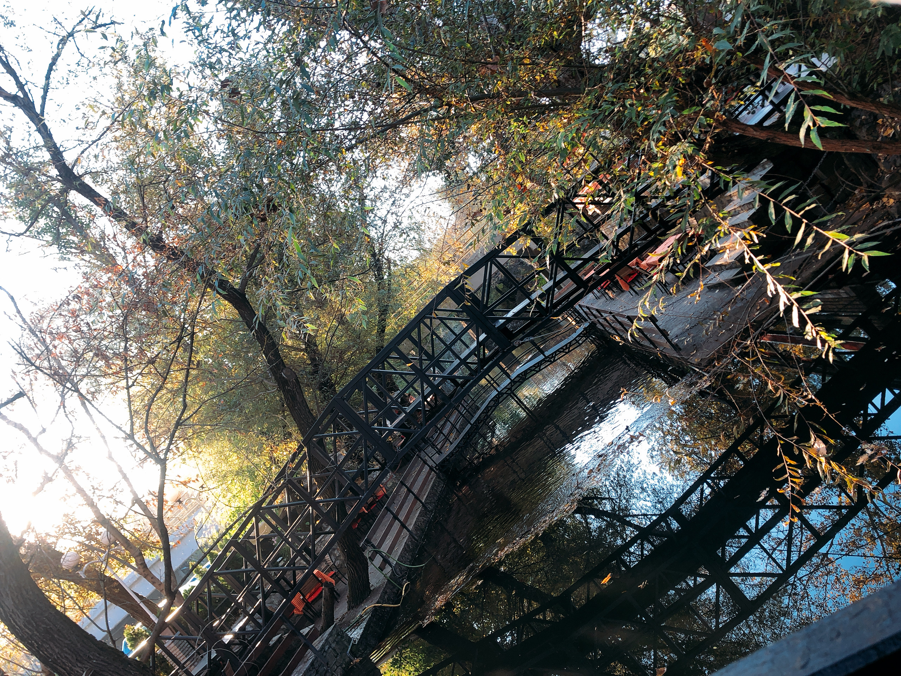
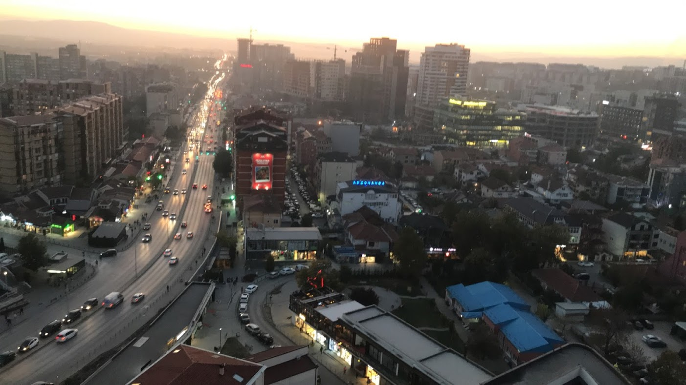
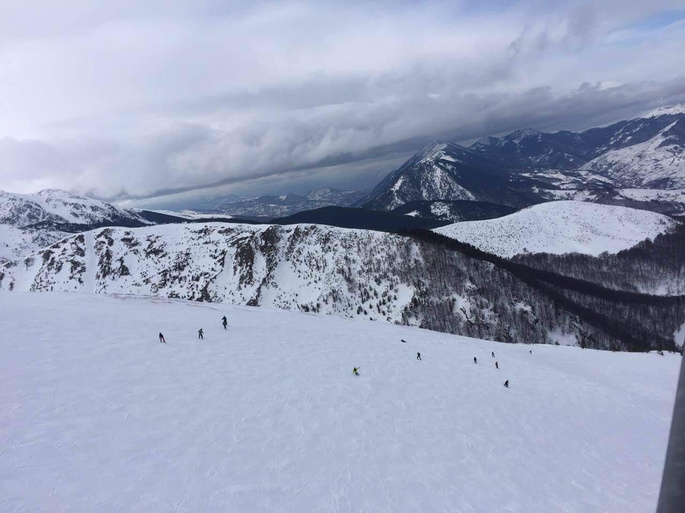
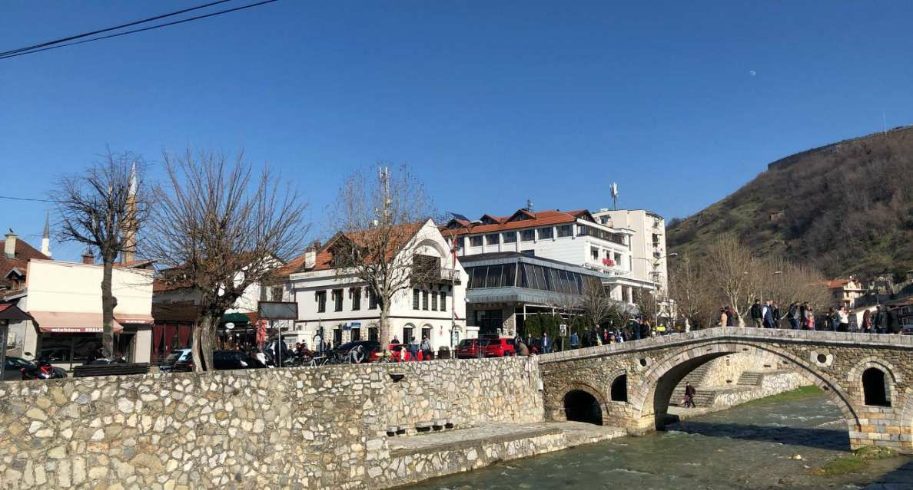
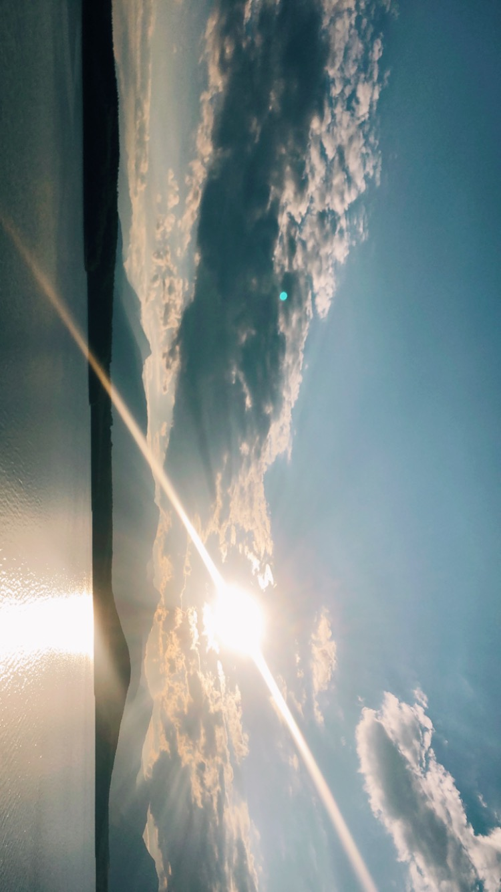
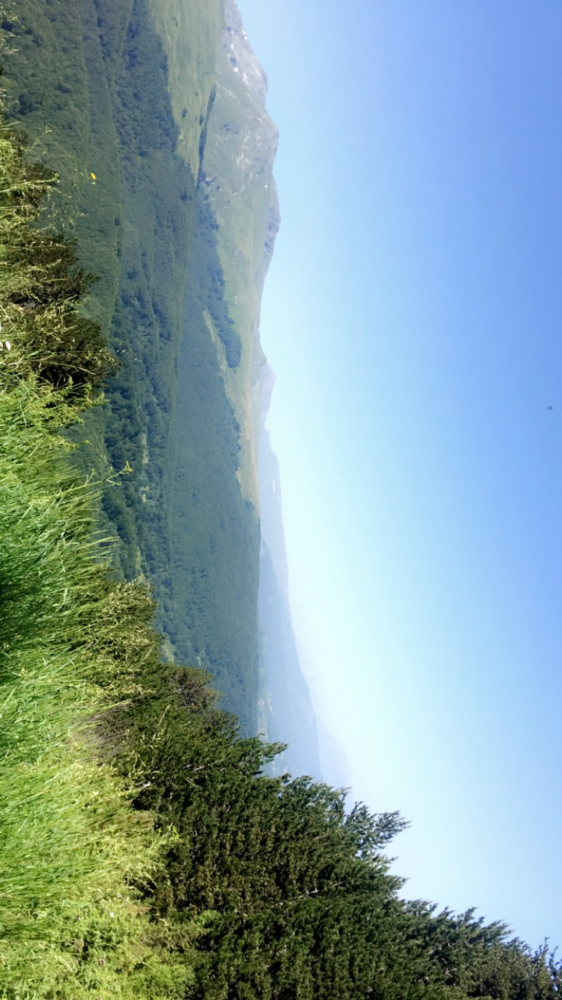

Mirusha Waterfall
- If you visit Mirusha, you'll see an amazing waterfall. There are small boats in the water, where you can swim on them. There are some restaurants there, as you can see one of them in the picture. It has a wonderful view, and the food is delicious. You can eat there and enjoy the view while hearing the sound of the water.

Pristina - Capital City
- Pristina is the capital city of Kosovo. In Pristina visit the cathedral, where you can go up and see the whole city. Near the cathedral, there is the National Bibliothek. It has an unique architecture. In Pristina there is Germia Park, which it has very beautiful view in every season. In fall season it's a fascinating view as the leaves are falling on the ground.

Brezovica Ski Resort
- Brezovica is one of the most visited turistic places in winter. Ski center is always opened there, and turists may use it even during summer but there is less snow. It also has hotels with high quality service. There is a ski lift, which I highly recommend trying it if the weather is not too cold. Otherwise, it might be dangerous to try it, if you will not ski.

Prizren City
- Prizren is the second largest city of Kosovo, after Pristina. It's the most beautiful city in Kosovo, and is very unique. If you visit Prizren, you should definitely visit Prizren's fortess. In the fortess of Prizren, you can see the whole city up there. Also, Prizren is known for the food, and you should eat in one of the restaurants there. Qebapa is the most delicious dish in Prizren, they are known for this dish.

Prevalla
- Prevalla is a turistic place which can be visited in any season. During winter it also serves as a ski resort. It's located in Sharr Mountains, and you can go there passing by Prizren. It's known as a healing place. People go there always to stay 21 days, so the air of Prevalla can affect in their health.


Dukagjini Lake
- Dukagjini lake is located in the beautiful city of Kosovo, Gjakova. It's a very attractive place, and has beautiful restaurants with delicious food. Kosovo also has other lakes as: lake of Badovc, lake of Batllava, lake of Mitrovica, etc. All of them are worth visiting, and spending time there.